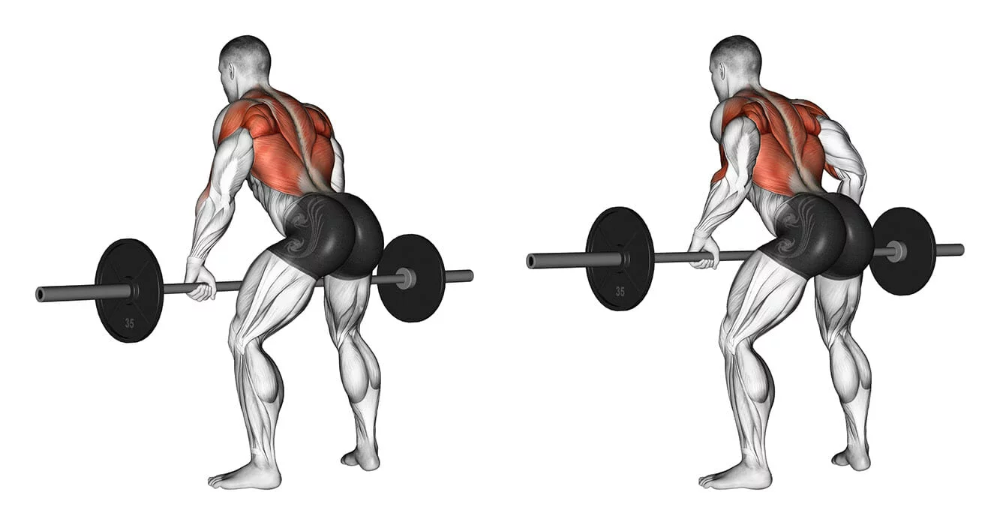
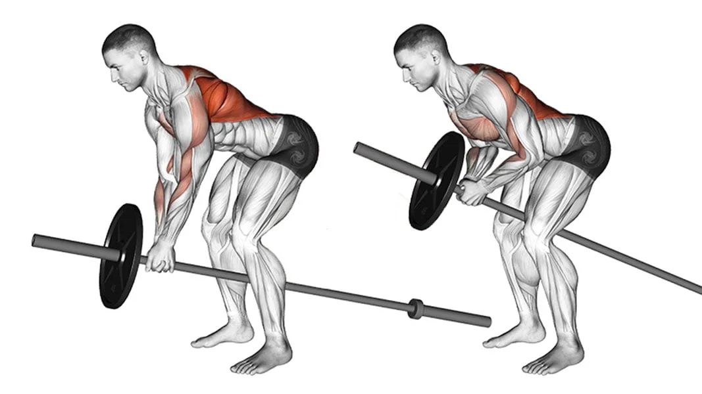
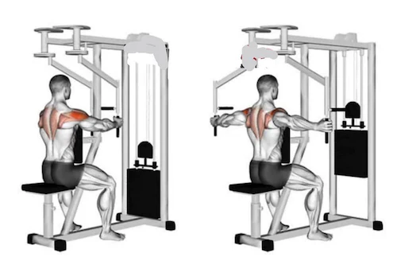
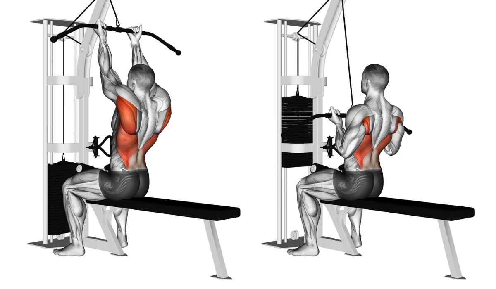

Exercícios para costas:
Remada curvada
Para realizar a remada curvada, a pessoa deve inclinar um pouco o tronco para frente e segurar a barra com as mãos em uma distância um pouco afastada da linha dos ombros. Em seguida iniciar o movimento flexionando os cotovelos, trazendo a barra em direção ao abdômen e depois voltar à posição inicial controlando o movimento.
Remada cavalinho
Para fazer a remada cavalinho, é importante que a barra esteja devidamente apoiada, além de ser também indicado o uso de um puxador em forma de triângulo, caso a barra não seja em formato de T, para garantir maior estabilidade para realizar o movimento e trabalhar melhor a musculatura das costas.
Voador invertido
Para fazer este exercício, a pessoa deve-se se sentar de frente para a máquina, com o peitoral encostado no banco, e segurar as barras do equipamento mantendo os braços esticados. Em seguida, deve-se abrir os braços até que sinta os músculos das costas sendo contraídos e depois voltar à posição inicial.
Puxada pulley supinada
Primeiramente, é necessário segurar a barra com a pegada supinada e em seguida trazer a barra mais ou menos até a região superior do peitoral, contraindo ao máximo a dorsal, depois estender os braços lentamente até que estejam acima da cabeça novamente. Repetir o movimento pelo número de vezes estipulado previamente.